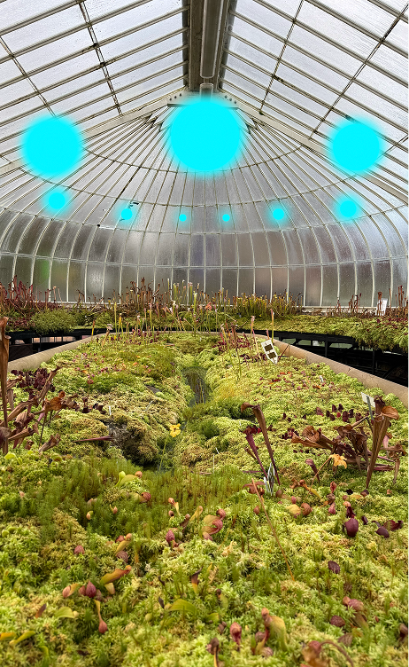

Zimnygrad is in deep winter.
The sun has not come up for over a month, and dark clouds engulf the sky. The city lights are perpetually on, shining light on the snow that has now reached up to the 10th floor of my Bloc. Luckily, I live on the 23rd and am still able to see a little bit outside. Before the end of the year, I have been rewarded with a small break, a break during what would once be considered a "holiday" season. Nothing more than the past now, there are no holidays in this regime.
During my break, I have spent most of my time lying in bed while Viktor is at work. It's boring to be home without him. I can only watch the shows I like for around 4 hours a day, other than that, I have to keep myself entertained in different ways. The 24th was the beginning of his break as well. I feel comfortable being able to wake up, and him still being next to me. How sad that he's my only comfort, and I can't even really be myself around him.
Viktor has sensed that something has been off with me lately. I can't blame him, my mind has been stuck on all of the information I have been finding at work. I tell him it's nothing and that I have just been having trouble with my insomnia again (which isn't exactly untrue). He jumps out of bed and heads toward our shared closet. He comes back with a hovering gift box and asks me to open it. It's a petrolcrystal necklace, known to keep the one wearing it completely warm from head to toe.
"I know how cold you get sitting down all day at work, even with all the heat in that place." I could cry. I kiss him. Why did he have to marry me?
——----------
Last night I attended a dinner with the Constins. Anton Constin sits on the Internal Review Board and is Viktor's childhood friend. His wife, Corina, is what would be considered a Zimnygrad masterpiece. She's flawless, with blonde hair and a slim figure, she makes any item of clothing look like it's been tailored specifically for her. Her smile is calm but equally terrifying, even though she makes me feel quite small. There is something about her that makes me not be able to take my eyes away.
The dinner was incredibly boring. Though the food was lavish, the conversations were empty. We spoke of the various synthetic materials that we thought best kept the warmth in, and how much the flooring in their apartment cost. Corina never dropped her smile, while I planned my mental escape routes.
As the men went to drink șliboviță and talk about robotic handball teams, Corina grabbed my arm and insisted we go look at her atrium full of plants. "The air is so fresh in here, you'll love it," she said as she hooked my arm around hers.
Her private garden was the first time I had experienced anything jungle-like in person. We took off our shoes, and I could feel the sensation of grass on my feet, reminding me of my childhood. We walked through the garden, slowly taking it all in. Then Corina stopped at a plant with a dark red color, which had not yet bloomed. She began to trace a shape on the flower, it was the Copii Sub Soare symbol for network leader.
I froze.
I could not believe it, and thought she may have drawn it by mistake if that was even remotely possible. She looked up at me with a big smile and a calm voice: "The righteous shall rejoice when he seeth the vengeance: he shall wash his feet in the blood of the wicked."
This was her message, she was a sister, and she was, like me, a spy. She was a believer. Her eye contact never broke, and she kept that same smile on her face. She said she saw my most recent findings had been sent out to the wider network by herself. She continued to play with the flower, from afar, it may look like she was explaining it to me in detail.
We had only a couple of minutes, so I had to give her all of the information I had so she could share it quickly. I told her that I have found more than the original document, I memorised more archives than before, including more doctored reports. And more importantly, I had been able to find all of the codes for entering the main public broadcast server.
Her smile went from sharp to utterly terrifying. "Good, I will take care of the rest." Is all she said after. We walked back to the lounge, talking of all the new fashions coming out of Zimnygrad this year. The smile on my face was finally real. We went back to our husbands, and then it was time for me to go back home.
Viktor said it looks like I had a lot of fun, and he insisted that we should invite them over as well. I couldn't agree more.
Now I am at home, Victor is asleep and peaceful, all I can think of is what is next to come. I pray to see the change soon, for all of us, my sisters.


Corina even has a fungi atrium, I never want to leave
Answered Prayers
24 - 11 - 10 P.F
29384950428